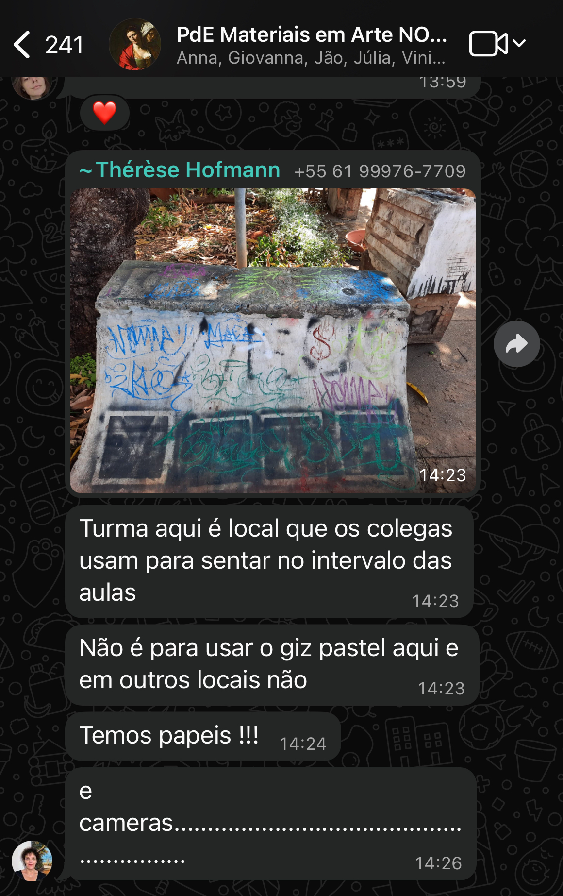

Livro do Artista
Materiais em Arte - Uma jornada pelas técnicas e criações
Sobre mim
Licença pra chegar;
Ninguém me conhece, logo vou me apresentar;
Nascido na VV Filipe, foram muitas mudanças;
Nas ruas me chamem de NEMO;
Lá no PRN ainda me chamam de FLIP;
Mas esse fica pros do peito que sempre geraram, memorias únicas nessas andanças;
E por ai sigo pintando muros;
Não pelo ego mas por enxergar o peso;
Relevância do hip-hop e o impacto na minha vida.

Materiais
Este livro é uma coleção de materiais artísticos produzidos de forma manual e natural. Cada seção apresenta uma técnica diferente, com materiais acessíveis e práticas para quem deseja explorar a arte com recursos sustentáveis e criativos.
Papel
Materiais
- Goma arábica
- Mel
- Glicerina
- Pigmento em pó
- Carga (carbonato de cálcio, talco ou caulim)
- Fungicida
- Almofariz
- Medidor
Instruções
- Prepare a goma arábica: dissolva 50 g em 250 mL de água quente.
- Misture 30 mL de goma arábica com 5 mL de mel e 10 mL de glicerina.
- Adicione 15 g de pigmento e 45 g de carga.
- Acrescente fungicida e misture até obter solução homogênea.

Aquarela
Materiais
- Goma arábica
- Mel
- Glicerina
- Pigmento em pó
- Carga (carbonato de cálcio, talco ou caulim)
- Fungicida
- Almofariz
- Medidor
Instruções
- Prepare a goma arábica: dissolva 50 g em 250 mL de água quente.
- Misture 30 mL de goma arábica com 5 mL de mel e 10 mL de glicerina.
- Adicione 15 g de pigmento e 45 g de carga.
- Acrescente fungicida e misture até obter solução homogênea.

Guache
Materiais
- Goma arábica
- Mel
- Glicerina
- Pigmento em pó
- Carga (carbonato de cálcio, talco ou caulim)
- Fungicida
- Almofariz
- Medidor
- Tampinhas ou godês
Instruções
- Prepare a goma arábica: dissolva 50 g em 250 mL de água quente.
- Misture 30 mL de goma arábica com 5 mL de mel e 10 mL de glicerina.
- Adicione 15 g de pigmento aos poucos.
- Acrescente fungicida e deixe evaporar nas tampinhas.
Acrílica / Nanquim

Materiais
- Pigmentos
- Emulsão acrílica ou látex
- Água
- Conservante (opcional)
Modo de Fazer
- Misture o pigmento com a emulsão acrílica
- Adicione água para ajustar consistência
- Armazene em recipientes fechados
Nanquim

Materiais
- Pigmentos
- Emulsão acrílica ou látex
- Água
- Conservante (opcional)
Modo de Fazer
- Misture o pigmento com a emulsão acrílica
- Adicione água para ajustar consistência
- Armazene em recipientes fechados
Têmpera Ovo

Materiais
- Gema de ovo
- Pigmentos
- Água
- Vinagre ou vinho branco (conservante)
Modo de Fazer
- Separe a gema e limpe-a com papel
- Fure a gema e deixe cair em um recipiente
- Adicione algumas gotas de vinagre
- Misture com o pigmento aos poucos
- Use imediatamente (não armazena)
Tinta a Óleo

Materiais
- Pigmentos
- Óleo de linhaça ou outros óleos vegetais
- Alcatrão (opcional)
- Álcool ou solvente
Modo de Fazer
- Misture o pigmento com óleo de linhaça
- Adicione alcatrão para maior durabilidade (opcional)
- Adicione álcool para ajustar consistência
- Deixe secar em recipientes fechados
Giz Pastel

Infelizmente não temos fotos do giz pastel produzido, mas a técnica foi aplicada em aula.
Carvão

Materiais
- Gravetos secos
- Lata metálica com tampa
- Prego para perfurar
- Fogão ou fogareiro
Modo de Fazer
- Faça furos na lata (laterais) com espaçamento de 1 cm
- Coloque os gravetos dentro da lata e tampe sem pressionar
- Leve ao fogo baixo (coloque sobre grelha) e deixe carbonizar
- Aguarde esfriar completamente antes de abrir